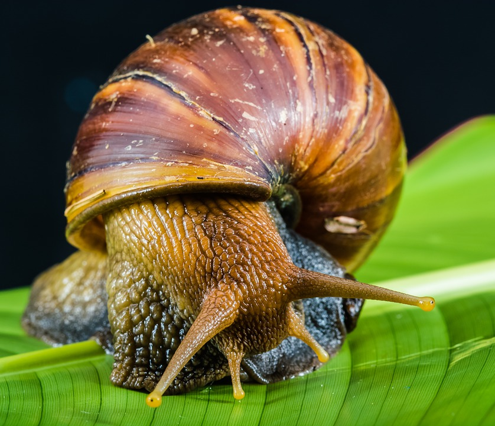
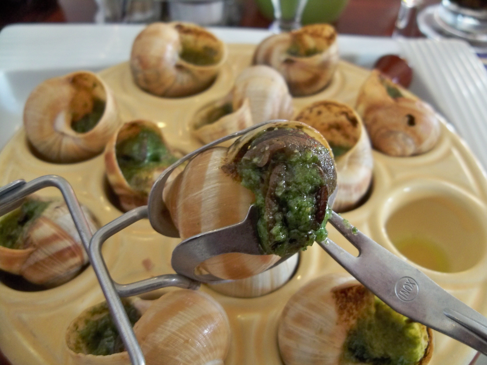
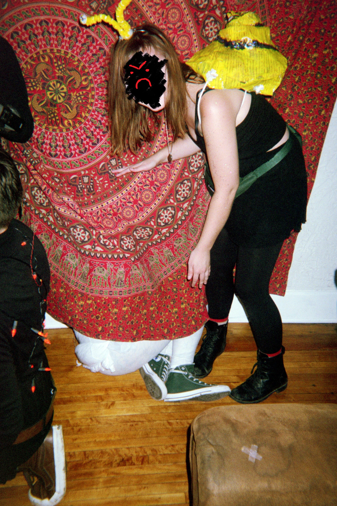

Who is the Snail?
People often get confused about the Snail in the same way they get confused about me, Grub. They think "snail" and get ideas in their head like this:
 If they are French, they maybe will think of something more like this:  But this is not the type of snail I'm talking about!! I'm talking about.... 
THE SNAIL!!
Grub and Snail HISTORY!
As many of my fans know, Grub and Snail are MORTAL ENEMIES!! Snail is a lying, cheating creature, holding lies beneath her hard and spiraled shell. However, it wasn't always this way. That's right... Grub and Snail used to be FRIENDS!!!!! It all started back in 2004, on New Year's Eve....
It was December 31st, 2004, and I (the Grub) was just getting ready to go to the hottest New Year's Eve party of all time. I went over to the apartment of my then-BESTIE, the Snail, to get ready for a big night and to usher in a brand new year of our FRIENDSHIP. Things were off to a great start - we were taking some totally ~hot~ pics and getting Grub-levels of ~glam~ - when I noticed Snail acting a bit weird. I brushed it off as nothing. Soon we were headed out to the party...
We arrived at the party at approximately 10:37pm. It was at the Milkmaid's house, which was kind of out of our social circle but all the most glamourous critters were there, so, obviously, we showed up. I went in search of some succulent, nutrient-fortified dirt; in the ten minutes I was gone, I lost track of Snail. I assumed that she was off looking for a moist environment in which to spread around her viscosity, like she usually did at social gatherings. I mingled with the flora and fauna, looking for a creature to smooch before midngiht. I all but forgot about snail, until....
At 11:58pm, I turned around, and I saw them. Snail and the Milkmaid. Together. Gabbing. Laughing. Holding hands, inspecting a piece of potentially-flavorful carpet lint. I was heart-broken... Snail had replaced me as best friend and confidant. She had betrayed my trust. At midnight, I resolved to hate her FOREVER!
My Anti-Snail Campaign
Now that I know the real Snail, I've dedicated a page of my blog to updates on the personal scandals of my former favorite gastropod. Here, you will find jusicy details on the life blunders of Snail. It serves to say: Don't Cross The Grub!!!!